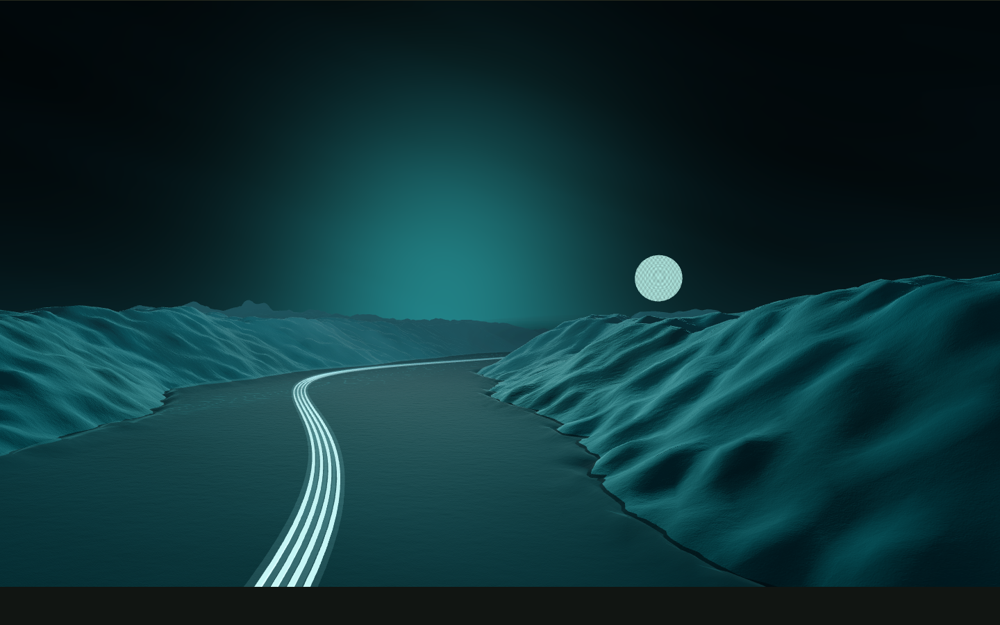

Listen before shaping.
Requirements are more than a list. I want to understand the process, the people using it, and where the friction actually is. Cross-team conversations are part of the technical work.
Finding a way through is what draws me in.
An original imagined landscape
I’m Victor, a software developer and problem solver. My work is grounded in Dynamics 365 Finance & Operations and the everyday realities of ERP: people, processes and systems that need to work together.
I enjoy following a problem all the way through—from the first conversation to the details that make a solution useful in practice.
Follow the approachRequirements are more than a list. I want to understand the process, the people using it, and where the friction actually is. Cross-team conversations are part of the technical work.
Technical design and implementation need to stay connected to that understanding. I think about how the solution fits the wider system, not just the piece in front of me.
Testing, deployment and support are part of the same thread. A solution isn’t finished just because the code runs; it needs to be workable for the people relying on it.

Moonlit shallows · imagined study
I like small experiments that open up bigger questions.
These are interests and explorations, not a client-project portfolio.
Toward a conversationA shoreline threshold · imagined study
I’m employed full-time. Alongside that, I’m open to contained freelance work for individuals and small businesses—especially remote, evening or asynchronous work with a clear scope.
I’m also interested in senior developer and technical-lead opportunities where I can contribute to the bigger picture.
Find me on LinkedInThis is a local design study. There’s no message form or delivery service here; LinkedIn is the real contact route.